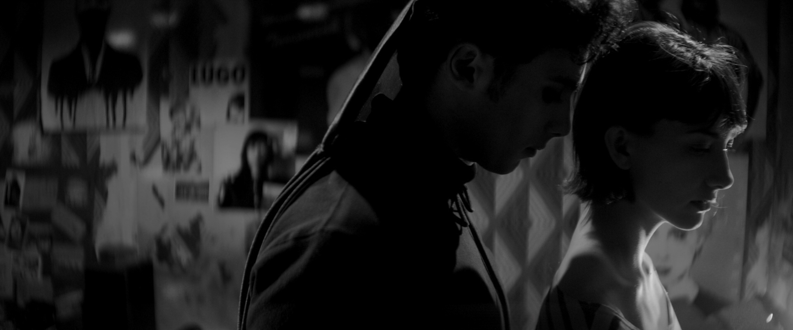
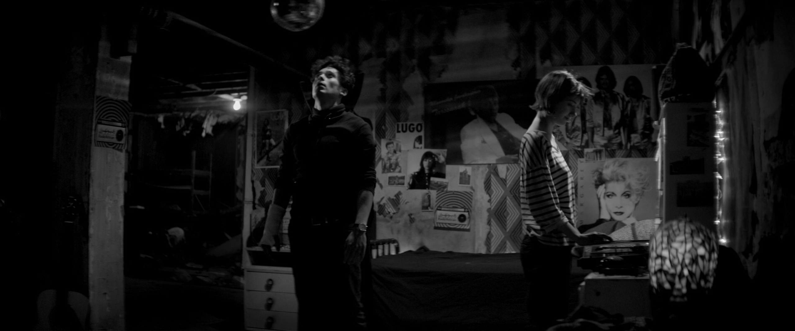
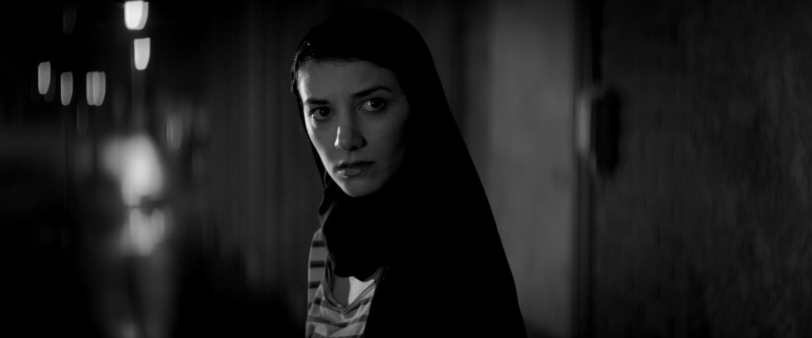
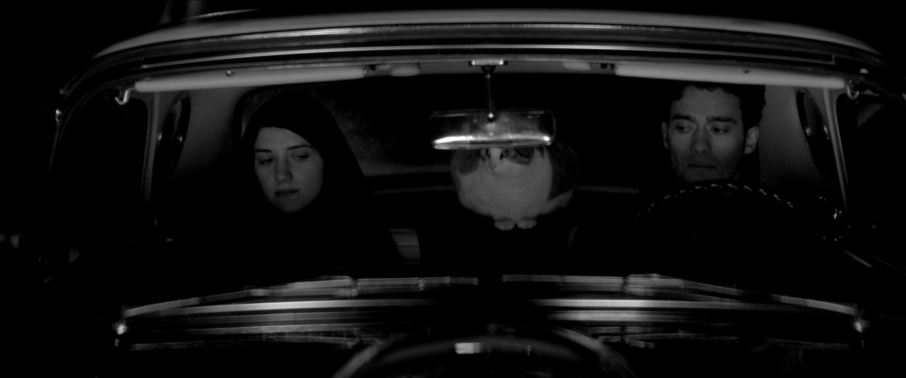

Film relates to gender, identity, and desire, in that they often rely on (and often reinforce) societal norms and constructs in which they filter their narratives and film worlds through. The framework of early (and much of modern) cinema is inherently masculine-centric and patriarchal, as film theorist Laura Mulvey acknowledges and critiques while using psychoanalytic theory from a feminist perspective. In the same vein, the psychoanalyst Félix Guattari writes about the way films can “become a gigantic machine for modeling the social libido”, landing on a similar conclusion as Mulvey (Guattari 341). Both activists argue that film has constructed a narrow, “monolithic,” framework of romance, gender, self-identity, and directed desire (Mulvey 401). These “norms” of film reflect the cultural paradigms they are produced in and for. Nonetheless, they also argue that film can challenge or reinvent those same socially charged constructs through “liberating” film projects that introduce new cinematic worlds, techniques, characters, dynamics, and elements (Guattari 346). In this paper, I will demonstrate how both thinkers agree that film’s dynamics of gender, identity, and desire develop according to the dominant cultural structures or norms of society, and that film could also be used to challenge these conventions. I will also examine how their conclusions could be applied to A Girl Walks Home Alone at Night (2014), a hypnotic film directed by Ana Lily Amirpour which frustrates, inverts, and at moments entirely breaks free from societal expectations and the “dominant reality” present in much of cinema (Guattari 336).
A Girl Walks Home Alone at Night (2014) 00:37:56Most cinema consists of films that are capitalist products. Films that are produced and distributed for mass appeal to generate the most revenue and the largest audience possible. One of the most popular strategies for production companies to accomplish these goals is through the classical character and narrative structure. Cinema has a long early history of portraying the motivation and goals of self-identifying masculine protagonists through the desire for romance with the opposite gender. Popular cinema orients its audiences with characters that are desirable or relatable, with the goal of the audience identifying themselves with those characters. Once the audience has identified with the main character, the film then directs them through a prism of desire, usually under the influence or with the goal of interaction with the opposite gender. Through this system of creating characters for the audience to identify with, much of cinema, especially early projects, both recreates and reinforces a commanding male archetype and a submissive female archetype. Audience members could not only identify with the aspirations of the male archetype but could also identify with the object of his gaze as the female archetype, consequently seeking or needing his desire. A male character is created for the audience to identify with or desire, who is then predicated with his own desire of pursuing the lead actress through the narrative.
A Girl Walks Home Alone at Night (2014) 00:09:53Cinema can become a crutch for patriarchal standards, as Félix Guattari writes in their essay “A Cinema of Desire”. Guarttari argues that cinema seems to “find it expedient to… not threaten the foundations of established order… tends toward limiting micropolitical struggles of desire” (Guattari 339). Since the established order of American society originated in and has maintained a patriarchal slant, films, especially classic cinema, has tended to uphold and perpetuate those same social conventions and norms. While these masculine-centric identification and desire models are social constructs, and work as signifiers, Guattari asserts cinema often rolls the “normalizing power of language onto the signifier” (Guattari 337). Cinema transforms pre-signifying desires such as identification within a group, mutual appreciation, and fulfillment into signifying concepts of identification with dominance, tiered binary gender expression, and desire for control or subjugation. Cinema presents its systems of identification, gender, and models of desire as natural or transcendental through this process of normalization. Guattari insists film’s “own effectiveness continues to depend on its pre-signifying symbolic components as well as its a-signifying ones”, concluding that films have the possibility to transform dominant frameworks it presents as natural, such as patriarchal values, into liberatory dynamics (337).
 A Girl Walks Home Alone at Night (2014) 00:53:49The film A Girl Walks Home Alone at Night creates such situations and characters with the goal of mimicking and then subverting the male and female archetypes, social constructs of gender and desire, and what and whom it directs its audience to identify with. The shot at 00:52:34-00:55:35 perfectly introduces and then subverts the audience and cinema’s expectations of how the characters interact with each other. In a recreation of so many early cinema scenes, where the male main character takes the lead actress to their apartment and turns on the record player, the Girl (Sheila Vand), takes Arash (Arash Marandi) to her apartment and begins to play the record player for him. He wakes up, spins the disco ball, and then, in an inversion of typical cinema gender expectations, submits to the Girl as she turns, threatens, and then leans on his chest, listening to his heartbeat. This scene and its character dynamics bring the old cultural trends and patriarchal values to the surface with the explicit goal to frustrate and complicate them. A Girl Walks Home Alone at Night flips gender expectations of dominance and subjugation, male and female archetypes that audiences are typically conditioned to identify with. Overall, the connection between Arash and the Girl in the shot in her room and throughout the final act of the film presents desire without dialogue or a framework, in an a-signifying, natural, liberatory fashion.
 A Girl Walks Home Alone at Night (2014) 00:52:28In their essay “Visual Pleasure and Narrative Cinema”, Laura Mulvey agrees with much of Guattari’s assertions of film, but uses psychoanalytic terminology to examine the “roles” the female gender is subjected to in much of cinema. Mulvey frames her arguments describing cinema’s classical gender dynamics through the prism of film’s manipulation of desire (scopophilia) and identity (narcissism and ego) (395). Mulvey develops the argument that women in film often only exist as the subjugated, second tier, female archetype in their film worlds, using Freudian concepts common in early film theory literature such as “phallocentrism” and how women impose a psychic “castration threat” upon male adults and children (392-393). Under these presuppositions, narrative cinema reduces women to being a signifier for a reduced man, one who needs securing, or one who threatens the established order. Mulvey relates cinema to gender, desire, and identity by borrowing the dominant frameworks of patriarchal social constructs and critiquing the statements cinema often presents. Similar to Guattari’s argument of how film uses language to naturalize its dominant social order, Mulvey writes that “the female image as a castration threat constantly endangers the unity of the diegesis and bursts through the world of illusion as an intrusive, static, one-dimensional fetish” (Mulvey 400). Just as the a-signifying forms often bubble to the surface in classical cinema, Mulvey contends that the female archetype begs to be liberated by its contradiction and reduction in the film space.
 A Girl Walks Home Alone at Night (2014) 01:20:49The scene at 01:20:30-01:22:07 in A Girl Walks Home Alone at Night recreates much of the themes in Mulvey’s essay through its presentation of the stereotypical dominant male in Hossein (Marshall Manesh), and the damsel in distress in Atti (Mozhan Marnò). However, in an inverted manner, the film has the Girl come and save Atti. Instead of some strong male archetype, this film raises the female archetype of its film world to the height of the male archetype figures present in genres such as Film Noir or Horror. The villain Hossein is complicated by his relationship to Arash, and Atti the woman who the Girl saves is a prostitute by trade, to which the film disregards as a qualification for receiving justice. The scene’s complexities also coincide with Mulvey’s conclusion at the end of her essay,
The first blow against the monolithic accumulation of traditional film conventions… is to free the look of the camera into its materiality in time and space and the look of the audience in dialectics and passionate detachment (401).
A Girl Walks Home Alone at Night presents its characters as round, contradictory figures, much closer to the real human condition than “traditional film conventions”. In the frames 01:21:28 and 01:21:32 of this scene, the camera and editing abandon realism and cuts to frames of entire black. The score and music of the film throughout masks, makes surreal, and in these frames envelops the Girl and her desires, motivations, and identity. While the frame is black, a circling, low pitch howling wind projects in the darkness, lulling when the film cuts back to the Girl feeding on Hossein, and rising again to pitch as it cuts to black again. This scene uses cinema’s unique ability to conflate and interact contrasting concepts and cinematic elements alongside one another to stray away from typical conventions of association and “passionate attachment”. The film empowers the Girl’s character and challenges the audience’s identification with normalized frameworks of gender, and the pleasure conventions of watching reaffirming confirmations of conventional stereotypes. A Girl Walks Home Alone at Night carves its own path and shape.
 A Girl Walks Home Alone at Night (2014) 01:35:35Cinema has historically reinforced societal norms and social constructs in a framework of patriarchal desire, gender theory, and male-centric identification. Mulvey and Guattari both argue that film's representation of gender, identity, and desire often reflects and reinforces the cultural paradigms of the society in which it is produced. However, they also suggest that film can challenge these conventions and introduce new cinematic worlds, characters, and techniques. In the film A Girl Walks Home Alone at Night, the audience's expectations of gender and desire are subverted through the portrayal of the main characters. By flipping gender expectations of dominance and subjugation, the film frustrates and complicates the old cultural trends and patriarchal values that cinema has historically upheld. In doing so, director Ana Lily Amirpour presents a liberatory view of desire that is not bound by societal norms and constructs. Ultimately, A Girl Walks Home Alone at Night demonstrates Mulvey and Guattari’s final assertions of how cinema has the potential to transform dominant frameworks and challenge established orders.
A Girl Walks Home Alone at Night. Directed by Ana Lily Amirpour, performances by Sheila Vand, Arash Marandi, Mozhan Marnò, Marshall Manesh and Masuka, Vice Films, 2014.
Guattari, Félix. “A Cinema of Desire.” Translated by David L. Sweet, Westfall, pp. 334-340.
Mulvey, Laura. “Visual Pleasure and Narrative Cinema.” Westfall, pp. 392-401.
Westfall, Joseph, editor. The Continental Philosophy of Film Reader. Bloomsbury Academic, 2018.